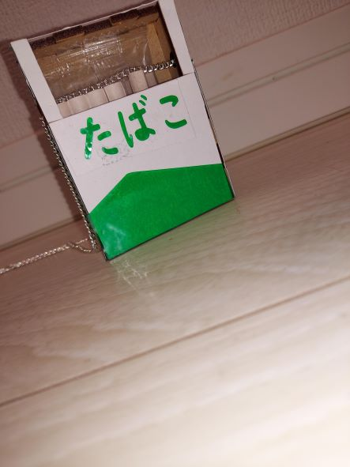
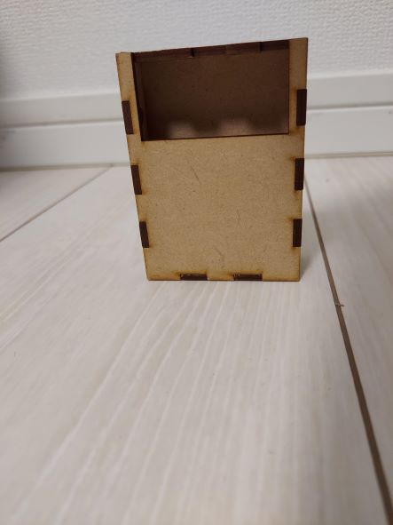
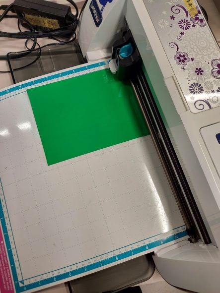
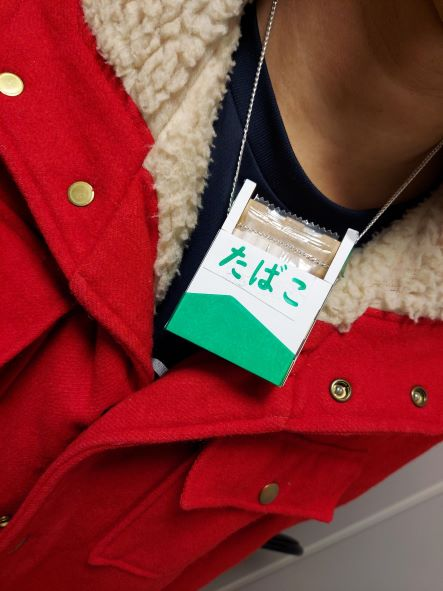
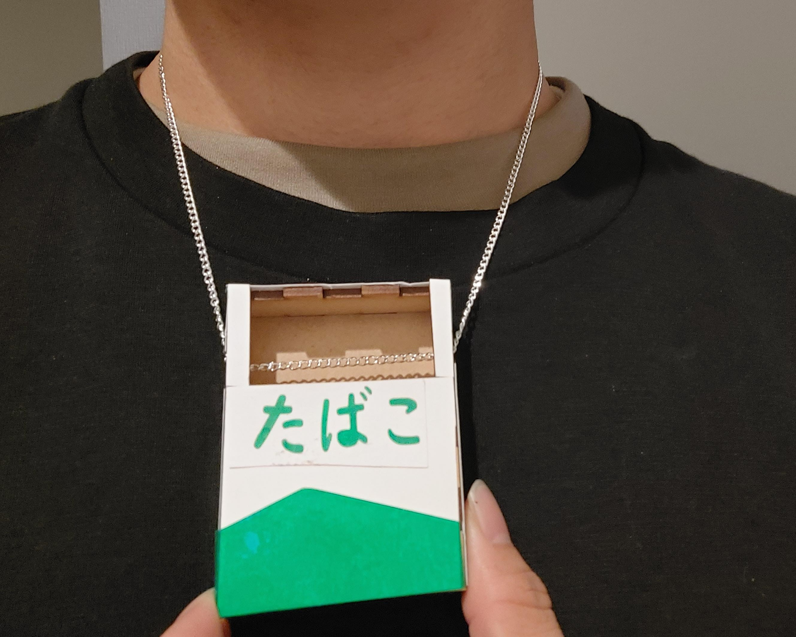

第5回 Design for others
前回の課題
第4回（前回の）課題
作品
今回私はたばこの箱をモチーフにしたネックレスを作りました

たばこを吸わないようにするために真ん中を空けており、たばこが減っていたら分かるような仕組みにしています。（本当は本物を入れた写真を撮りたかったですが、未成年のため代わりにココアシガレットを入れました。）
作り方
左下の写真のようにレーザーカッティングで箱を作り、木の感じをなくすためにその上に画用紙を張り、たばこの箱の感じを出し、最後にカッティングプロッターで作成したシールを貼りました。（右下の写真はカッティングプロッターの写真です。）

着用モデル

反省点
- レーザーカッティングの上から画用紙を張るくらいなら、最初から３Dプリンターで箱を作り、その上からシールを貼るべきだった。
- 画用紙を貼ったことによって安っぽさや工作感が出てしまった。
- 作ろうとしていたシールの文字が小さくてうまくカッティングプロッターできることができなかった。
これらのせいで思っていたクオリティにすることができなかった。
使った機材
同じ班の人の作品